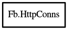

HttpConns
Object Hierarchy:

Description:
[ Compact ]
public class HttpConns
Represents a set of RequestHTTP.
Content:
Methods:
- public void add (RequestHTTP con)
Adds a RequestHTTP to the
HttpConns.
- public void cancel_all ()
Cancels each RequestHTTP in the
HttpConns.
- public void free ()
Frees all memory used by the HttpConns.
- public bool is_canceled ()
Determines if the HttpConns has been
canceled.
- public void remove (RequestHTTP con)
Removes a RequestHTTP from the
HttpConns.
- public void reset ()
Resets the HttpConns.